Quiz 2 Practice Problems
If you are a current student, please Log In for full access to the web site.
Note that this link will take you to an external site (https://oidc.mit.edu) to authenticate, and then you will be redirected back to this page.
Practice Problems for 6.009 Quiz 2 (Spring 2018)
Since these are practice problems, there is nothing to turn in! We have included unit tests for each problem: the unit test for Problem 01 is called TestProblem01, and so on.
The following file contains quiz.py and test.py: q2_problems.zip
Problem 01: solve_latin_square
A Latin square is an n x n grid of numbers in which each row and
each column contains the numbers 1, 2, ..., n exactly once. Below is
an example of a 3 x 3 Latin square.
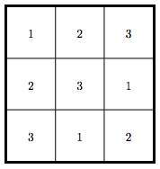
You are given a partially filled square with empty cells. Your task is to produce a Latin square by filling the empty cells, or determine that the task is impossible. We recommend that you perform a search over all possible values to place in the empty cells. This problem should remind you of Tent Packing lab.
Suppose you were given the following partially filled 3 x 3 square.
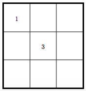
One way to fill in the empty squares with values of 1, 2, or 3
to produce a Latin square is shown above in the first figure.
For this question you will implement the solve_latin_square method
to the specification below.
INPUTS:
grid: a list-of-lists representation of a partially filled square.grid[r][c]gives the value of the cell in rowrand columnc(grid[0][0] gives the value in the top left corner). A value of-1indicates that the value is missing -- it will be your job to fill in the values of these cells.
OUTPUT:
If a solution exists, your program should return a list-of-lists
finished_grid, corresponding to grid with the empty cells filled
in properly. Multiple solutions may exist -- you only need to return
one.
If no solution exists, your program should return False.
EXAMPLES:
- Using the example above, one valid solution to
solve_latin_square([[1, -1, -1], [-1, 3, -1], [-1, -1, -1]])is[[1, 2, 3], [2, 3, 1], [3, 1, 2]]. - One valid solution to
solve_latin_square([[-1, -1], [-1, -1]])is[[1, 2], [2, 1]].
Problem 02: is_proper
A black-red tree can store information across successive levels of nodes, starting with the root. Each node is colored either black or red (hence the name) and points to up to 2 children: a left child and/or a right child. The child(ren) of any node can be of either color.
We say that a black-red tree is proper if it satisfies the following property: Any path from the root to a leaf contains the same number of black nodes. Recall that a leaf is a node with no children.
We implement a black-red tree as a nested dictionary. Each node in the black-red tree is a dictionary containing:
"color": the color of the node as a string, either "black" or "red""left": the left child, as another dictionary, if it exists. If the node does not have a left child, then the value is-1."right": the right child, as another dictionary, if it exists. If the node does not have a right child, then the value is-1.
Consider the following example of a proper black-red tree in which any path from the root to a leaf contains exactly 2 black nodes.
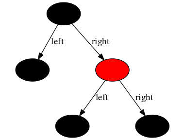
root1, the root of this proper black-red tree, in our implementation, is
{
"color": "black",
"left": {
"color": "black",
"left": -1,
"right": -1
},
"right":{
"color": "red",
"left": {
"color": "black",
"left": -1,
"right": -1
},
"right": {
"color": "black",
"left": -1,
"right": -1
}
}
}
In contrast, the following black-red tree is NOT proper. The path from the root to the left leaf contain 1 black node, while the path from the root to the right leaf contains 0 black nodes.
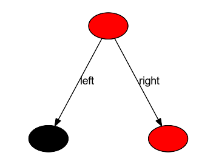
root2, the root of this second black-red tree, in our implementation, is:
{
"color": "red",
"left": {
"color": "black",
"left": -1,
"right": -1
},
"right": {
"color": "red",
"left": -1,
"right": -1
}
}
For this question you will implement the is_proper method to the specification below.
INPUTS:
root: the root of a black-red tree, as a dictionary.
OUTPUT:
A Boolean (True/False) indicating whether the black-red tree is proper.
EXAMPLES:
is_proper(root1)withroot1as defined above should returnTrue.is_proper(root2)withroot2as defined above should returnFalse.
HINT: Many approaches can work here. One approach (might not be the simplest to implement) is to recursively find all paths from the root to a leaf. Then, you can check the number of black nodes in each path.
Problem 03: Prairie Dog Housing Lottery
Please implement the function lottery(prairie_dogs, capacities),
which assigns prairie dogs to available burrows. Not all prairie dogs
are willing to live in all burrows; they have idiosyncratic individual
preferences. Furthermore, each borrow can only fit so many prairie
dogs. The first input value is a list with one element per prairie
dog, where each element is itself a list of numbers (in no particular
order), each number standing for a burrow that this prairie dog will
accept. The second input value is a list giving burrow capacities.
Indices in this list correspond to numbers from the
prairie-dog-preference lists. If an assignment exists from prairie
dogs to burrows, satisfying everyone's preferences, then return that
assignment, as a list of numbers, following the same order as the
original list. If no satisfactory assignment exists, return None.
Warning: there are solutions to this problem at a variety of sophistication levels. The simplest solutions will be too slow for the largest test cases! You'll need to apply some of the ideas from class to finish all the tests in time.
Examples:
lottery([[2], [1], [0]], [1, 1, 1]) should return [2, 1, 0].
lottery([[0, 1], [1, 0], [0, 1]], [1, 1]) should return None.
lottery([[0, 1], [2, 3], [4, 5], [0], [2], [4]], [1, 1, 1, 1, 1, 1]) should return [1, 3, 5, 0, 2, 4].
(Note that our test cases accept multiple correct answers, for those test cases whose answers aren't uniquely determined.)
Problem 04: Advanced Forestry
There are various styles of linked structures. In one style, With each "modification" to a structure, we can return a new version without modifying the original; in the other style, we can modify the original in-place. In this question, we will stick to the second kind, using modification.
We will be working with a peculiar combination of binary search trees and linked lists. Every node in a structure belongs to both a binary search tree and a linked list.
The binary-search-tree can be used for representing sets of values.
Some node is designated as the root, and each node has two children,
left and right, either of which may be None. A node and all others
reachable from it via left-child and right-child links is called a
subtree. All data values in a node's left subtree must be lower
than the node's own data value, and all data values in the right
subtree must be higher.
Our wrinkle is to reuse the same nodes to form a linked list, taking
us through all the nodes in sorted order. What added benefit does
this wrinkle bring? It lets us answer range queries very
efficiently: given a tree and data values u and v, we can quickly
return a sorted list of all data values w in the tree such that u
<= w <= v.
Every node of the tree is a dictionary. Here are the keys that every dictionary includes. (We augment this explanation with a picture afterward.)
"data"stores the data value that this node tells us is in the set."left"points to a subtree with data values less than"data", or containsNoneif that subtree is empty."right"points to a subtree with data values greater than"data", or containsNoneif that subtree is empty."prev"points to the tree node whose data value comes immediately before this one in sorted order, or containsNoneif this is the first element of the sorted list."next"points to the tree node whose data value comes immediately after this one in sorted order, or containsNoneif this is the last element of the sorted list.
Here is an example of one of these trees.

Nodes are circles with their data values inside. When number n
appears inside node A, we have A["data"] == n. The root, with
data value 3, appears highest. A node connects to its left child with
a solid arrow going down and to the left, and solid rightward arrows
connect to right children. So, node A with a solid left arrow to
B and a solid right arrow to C has A["left"] == B and
A["right"] == C. A dashed arrow from node A to node B indicates
that A["next"] == B. Furthermore, we also record the information in
the other direction: B["prev"] == A. Our tests will enforce exactly
this convention for encoding nodes with dictionaries, so please follow
it.
Your task is to write function insert(tree, data) implementing
insertion into tree of a new node with data value data. First,
find the unique node nd of tree that
currently has no left or right child, such that it is legal to insert
the new node to the left or right of nd, respectively; and then go
ahead and perform that insertion. It may also be necessary to fix up
the "next" and "prev" pointers not just in the new node but also
in some others from the original tree, to keep this linked list in
sorted order. Note that this function doesn't return anything; we run
it just for the modifications it makes to tree.
The test cases for this problem follow an unusually hard-to-read
textual format, so we now include pictures of all the input trees. In
the starter code, we also provide a function print_tree that
generates a nicer rendering of a tree.
When t is the tree shown for Cases 7-8 and u is the tree given as
an example output for Case 8 at the bottom, we have insert(t, 7) ==
u.
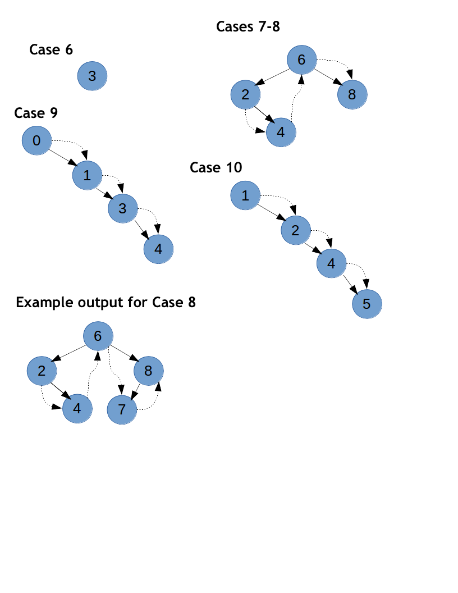
Problem 05: solve_magicsquare_recursive
A magic square is an n x n grid of numbers in which each row, each
column, and both diagonals add to the same "magic sum". For example,
shown below is a 3 x 3 grid with a magic sum of 15.
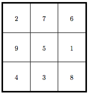
Suppose we were only given the partially filled 3 x 3 square without
2, 9, or 4 filled in:
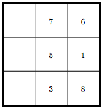
If we were told that the magic sum is 15, we would be able to fill in
the proper values to place in the empty cells, through a series of
"deductions". A "deduction" involves examining a row/column/diagonal
and inferring a proper cell value by utilizing magic_sum. For
example, we deduce that 2 belongs in the top-left cell by
calculating 15 - 6 - 7 = 2.
In addition to the grid, you will now be given choices, a list of
numbers that you can use to fill the empty cells. The same number
can be used to fill multiple empty cells. We recommend that you
perform a search over the possible values to put in the empty
cells. This should remind you of the recursive solutions you
implemented in your labs.
For example, consider the following partially filled square.
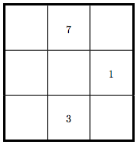
Given that magic_sum = 15 and choices = [1, 2, 3, 4, 5, 6, 7, 8,
9], then one possible solution is the following, where we have filled
in the empty cells with values in choices.
Implement the solve_magicsquare_recursive function to the
specification below. You are guaranteed that a valid solution exists.
INPUTS:
grid: a list-of-lists representation of a partially filled square.grid[r][c]gives the value of the cell in rowrand columnc. A value of-1indicates that the value is missing -- it will be your job to fill in the values of these cells.magic_sum: the magic sum of the completed magic square.choices: a list of numbers that can be used to fill the missing values. Each number inchoicescan be used to fill multiple empty cells.
OUTPUT:
A list-of-lists finished_grid, corresponding to grid with the
empty cells filled in properly. An empty cell can only be filled in
with a number in choices. Multiple solutions may exist -- you only
need to return one.
EXAMPLES:
- Using the example above, one valid solution to
solve_magicsquare_recursive([[-1, 7, -1], [-1, -1, 1], [-1, 3, -1]], 15, [1, 2, 3, 4, 5, 6, 7, 8, 9])is[[2, 7, 6], [9, 5, 1], [4, 3, 8]]. - One valid solution to
solve_magicsquare_recursive([[-1, -1], [-1, -1]], 4, [1, 2, 3, 4])is[[2, 2], [2, 2]].
Problem 06: alternating_colors( graph, start )
In this problem, graph is a graph represented as a dictionary. Your
task is to check whether the graph can be colored using two colors
with the constraint that no two vertices that have an edge between
them can have the same color. start is the vertex from which you
should start coloring. You can assume that all vertices in the graph
are reachable from start.
If the graph is not 2-colorable, your function should return an empty
dictionary {}. If the graph is 2-colorable, your function should
return a dictionary of key:value pairs that represent a valid
2-coloring respecting the coloring constraint. Each key corresponds to
a vertex in the graph and each value is one of 'Red' or
'Blue'. All vertices reachable from vertex start should be
included as keys.
Examples of function invocation and return are given below the pictures of graphs.
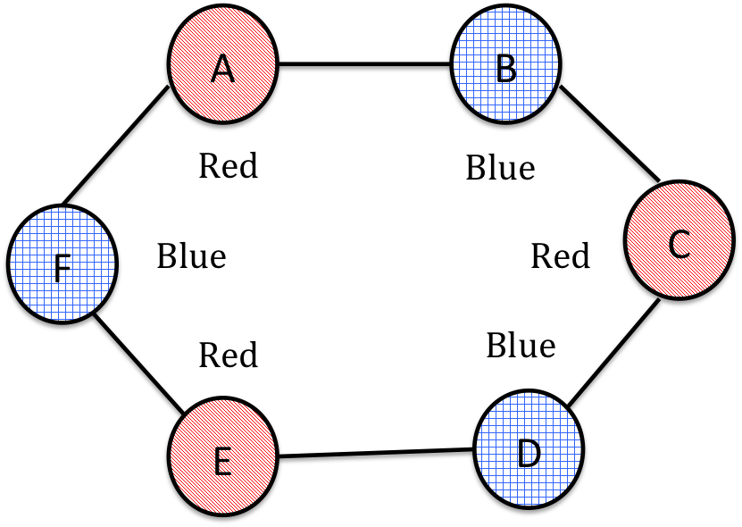
alternating_colors({'A': ['B', 'F'],
'B': ['C', 'A'],
'C': ['D', 'B'],
'D': ['C', 'E'],
'E': ['D', 'F'],
'F': ['A', 'E']}, 'A')
could return
{'A': 'Red', 'B': 'Blue', 'C': 'Red', 'D': 'Blue', 'E': 'Red', 'F': 'Blue'}
or a different valid coloring with 'Red' and 'Blue' interchanged.

alternating_colors({'A': ['B', 'E'],
'B': ['C', 'A'],
'C': ['D', 'B'],
'D': ['C', 'E'],
'E': ['A', 'D']}, 'A')
should return {} since there is no valid coloring.
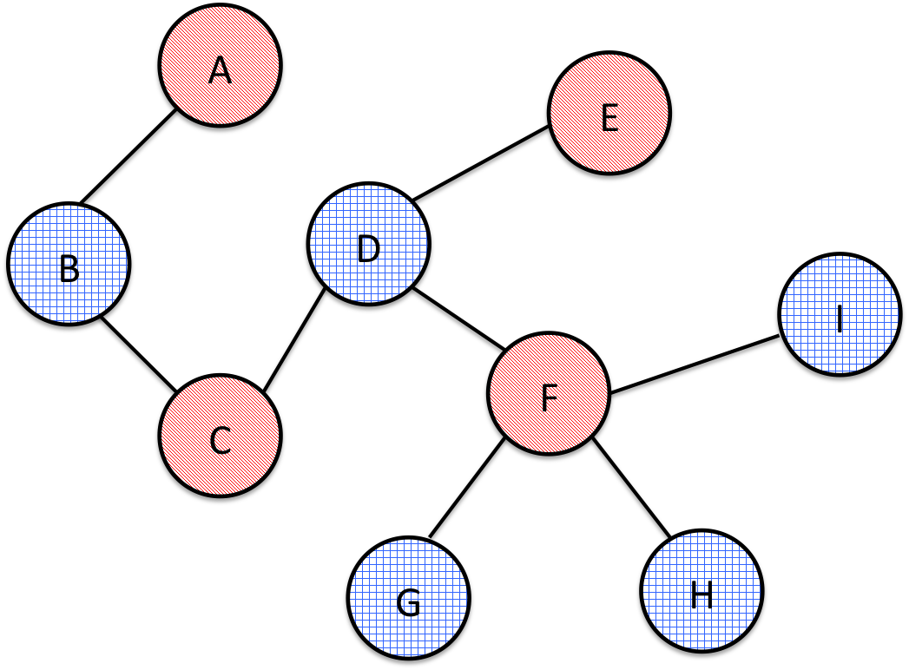
alternating_colors({'A': ['B'],
'B': ['A', 'C'],
'C': ['B', 'D'],
'D': ['C', 'E', 'F'],
'E': ['D'],
'F': ['D', 'G', 'H', 'I'],
'G': ['F'],
'H': ['F'],
'I': ['F']}, 'A')
could return
{'A': 'Red', 'B': 'Blue', 'C': 'Red', 'D': 'Blue', 'E': 'Red', 'F': 'Red',
'G': 'Blue', 'H': 'Blue', 'I': 'Blue'}
or a different valid coloring with 'Red' and 'Blue' interchanged.
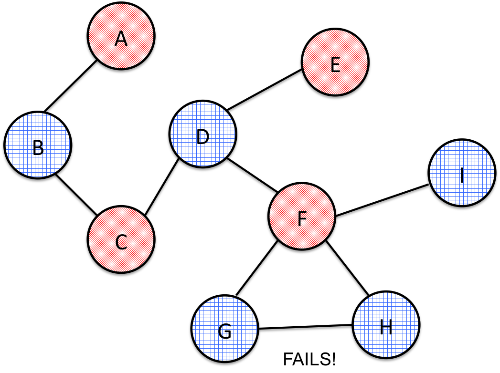
alternating_colors({'A': ['B'],
'B': ['A', 'C'],
'C': ['B', 'D'],
'D': ['C', 'E', 'F'],
'E': ['D'],
'F': ['D', 'G', 'H', 'I'],
'G': ['F', 'H'],
'H': ['F', 'G'],
'I': ['F']}, 'A')
should return {} since there is no valid coloring.
Problem 07: check_BST( btree, start )
Assume that you are given a binary tree. Your task is to write a function to check whether it is a Binary Search Tree (BST). Recall that a BST has the following property: Each vertex has a value and the value of any vertex in the left subtree has to be less than the value of the vertex and the value of any vertex in the right subtree has to be greater than the value of the vertex. You can assume all values in any given tree are unique.
We will use a dictionary representation for a binary tree or BST:
extree = {'root': [22, 'A', 'B'],
'A': [14, 'C', 'D'],
'B': [33, 'E', ''],
'C': [2, '', ''],
'D': [17, '', ''],
'E': [27, '', '']}
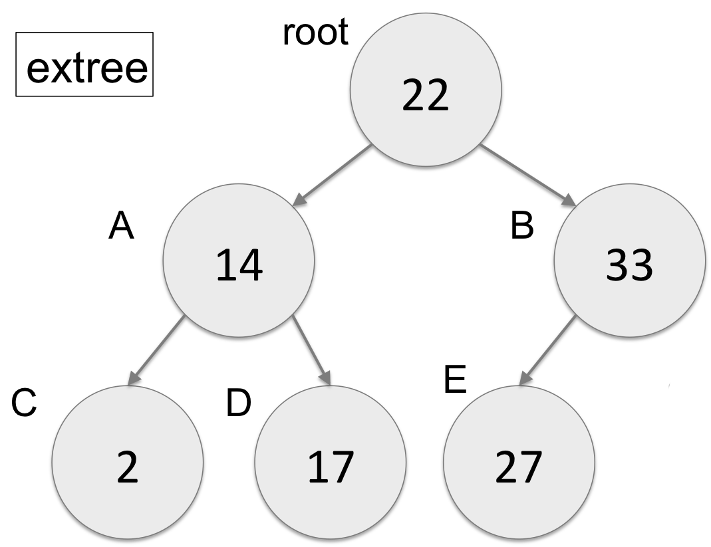
Examples:
check_BST({'root': [22, '', '']}, 'root') should return True.
check_BST(extree, 'root') should return True. extree corresponds
to the example in the picture above.
check_BST({'root': [22, 'A', 'B'],
'A': [14, 'C', 'D'],
'B': [33, 'E', 'F'],
'C': [2, '', ''],
'D': [17, '', ''],
'E': [27, '', ''],
'F': [45, 'G', ''],
'G': [32, '', '']},
'root')
should return False, since vertex G with value 32 is in the right subtree
of the vertex B, which has the value 33. The BST property needs to hold
recursively throughout the tree, and it does not as shown below.
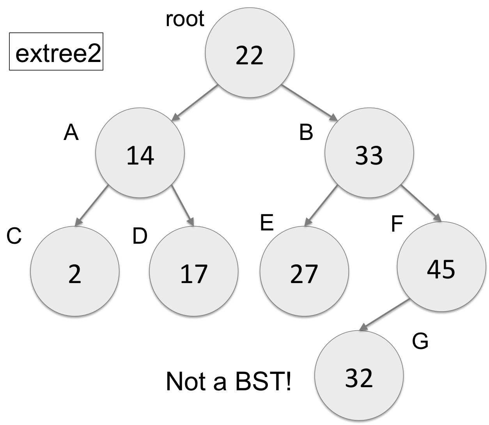
Note that in order to receive full credit, your code should work on binary trees with arbitrary depth, not for just the test cases.
Problem 08: pipe_cutting
You are tasked with buying plumbing pipes for a construction project. Your foreman gives you a list of the varying lengths of pipe needed. The local hardware store sells pipes in one fixed length but has a saw for you to cut up the pipes in any way you choose. Your job is to figure out the minimum number of stock pipes required to satisfy the list of requests, in order to save money and minimize waste.
Please implement pipe_cutting(requests, stock_length) where
requests is a list of pipe lengths needed for the project
and stock_length is the length of the pipes you can purchase at Home
Depot. pipe_cutting should return an integer giving the minimum
number of purchased pipes needed to satisfy the list of requests.
You can assume that all elements in requests are positive numbers
that are no longer than the stock pipe length. So, in the worst case, it
will take a number of stock pipes equal to the size of the request list.
You do not need to report the cutting/division in the optimal
solution, just report the minimum number of stock pipes needed.
There are different ways of solving this problem. We recommend, but do not require, a recursive approach for which the hint below will be useful.
Hint: For any particular request, the request might be satisfied by choosing a left-over pipe length or cutting from any left-over pipe lengths, or by choosing to buy a new pipe and cutting it to length.
EXAMPLES:
pipe_cutting([],8) = 0pipe_cutting([7],7) = 1pipe_cutting([7,6,4],10) = 2// e.g., cuts are[7],[6,4]pipe_cutting([4,3,4,1,7,8],10) = 3// e.g., cuts are[4,4,1],[3,7],[8]